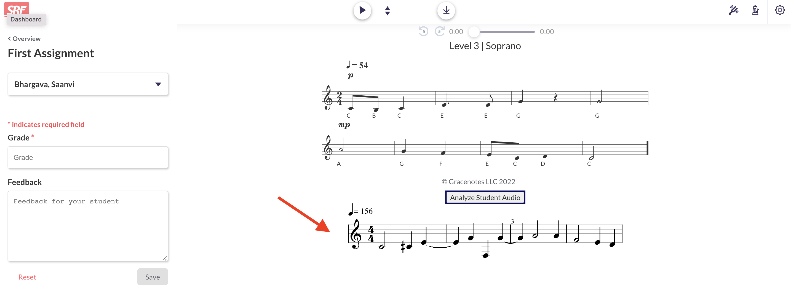

Hi! Welcome to Taal - Know Your Notes.
Taal makes learning to sing and teaching to sing easy and fast.
Taal makes learning to sing and teaching to sing easy and fast.
Teachers often find grading assignments on Sight Reading Factory difficult because they must listen to a
student recording and then compare it to a piece of notated music.
This can take a long time and take away from time that can be spent with the students.
Teachers can use Taal to grade Sight Reading Factory assignments faster.
Simply go to your student assignment grading page, and click the button, as shown in the picture below, to
allow Taal to analyze the student audio and create sheet music.
The notated music created by Taal is injected at the bottom of the page.
Now, just compare the sheet music to the original one that was displayed to the student for their assignment
to grade the student accuracy.

Students and teachers can also use our website,
https://www.knowyournotes.app/
, to create sheet music of any audio recording, whether practicing a music that is not on Sight Reading
Factory, or just for fun.
Taal is a must-have tool for any singing or choir teachers.
If you have any questions or concerns, please feel free to contact us at
saanvi.bhargava@gmail.com.